Lucid
After-sales services · Trust that extends
Lucid doesn't disappear after delivery.
Most car brands go quiet once the keys are handed over. The brief was to bring owners closer to Lucid through its after-sales services: a 24/7 service truck, roadside assistance and the Lucid app. The goal was to reduce ownership anxiety and make the brand feel present, proactive, human and always within reach.
Trust that extends
One umbrella idea, a long-term promise that Lucid stays with you wherever the experience leads. It stretches across four dimensions, so every service has a place to live.
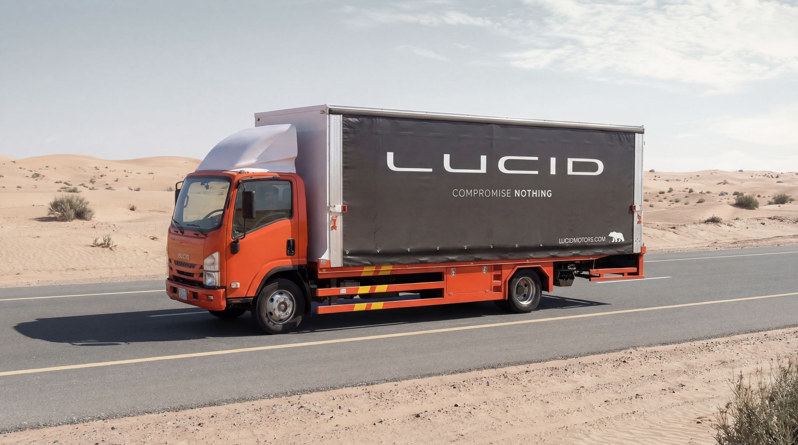
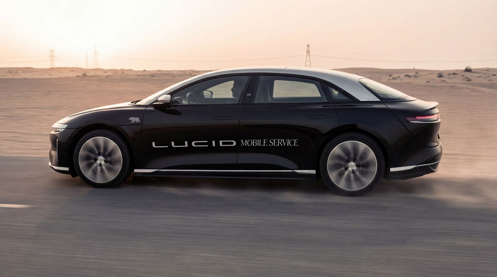
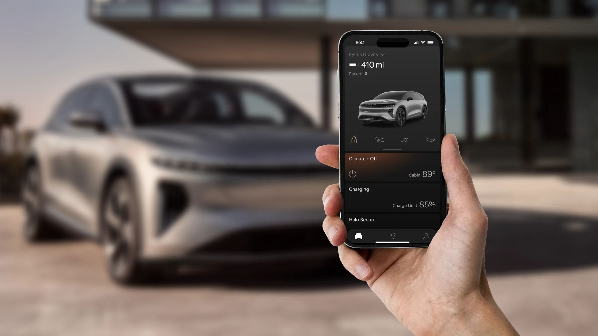
Support that follows you
The launch visuals put a face and a phone next to the car: a real person, calm and confident, and the app that keeps service one tap away.
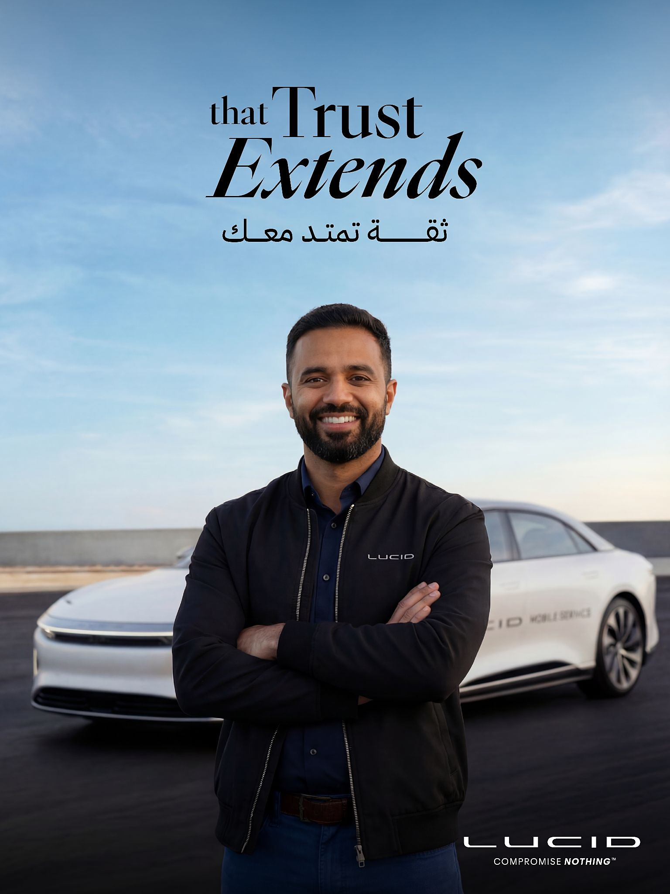
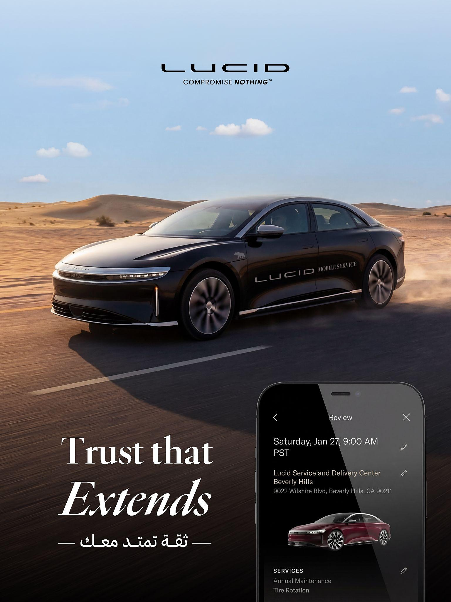
Anytime, anywhere
Round-the-clock support shown as something you can see: a 24/7 that rises over the city, and the service truck that comes to you, by day and by night.
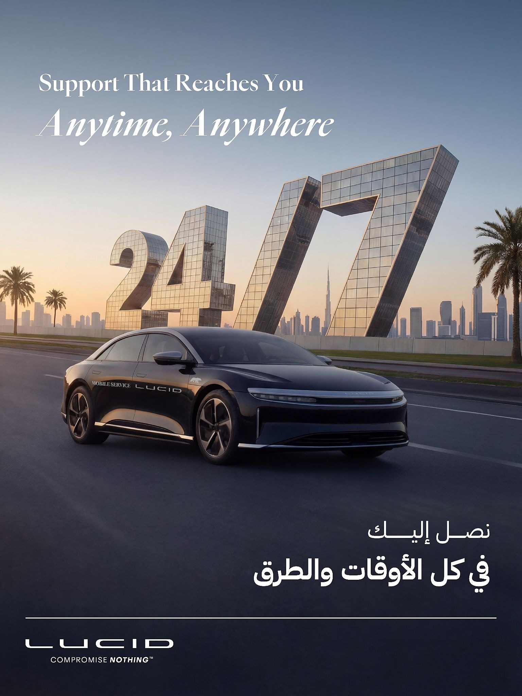
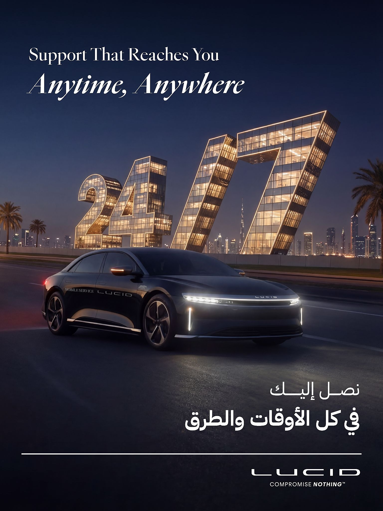
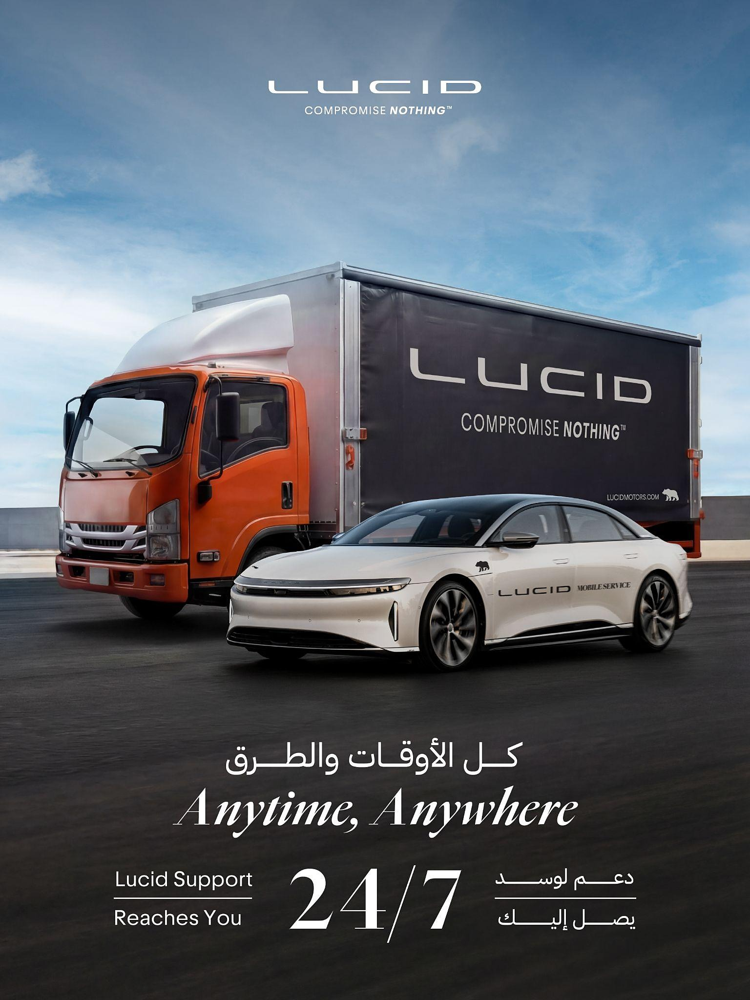
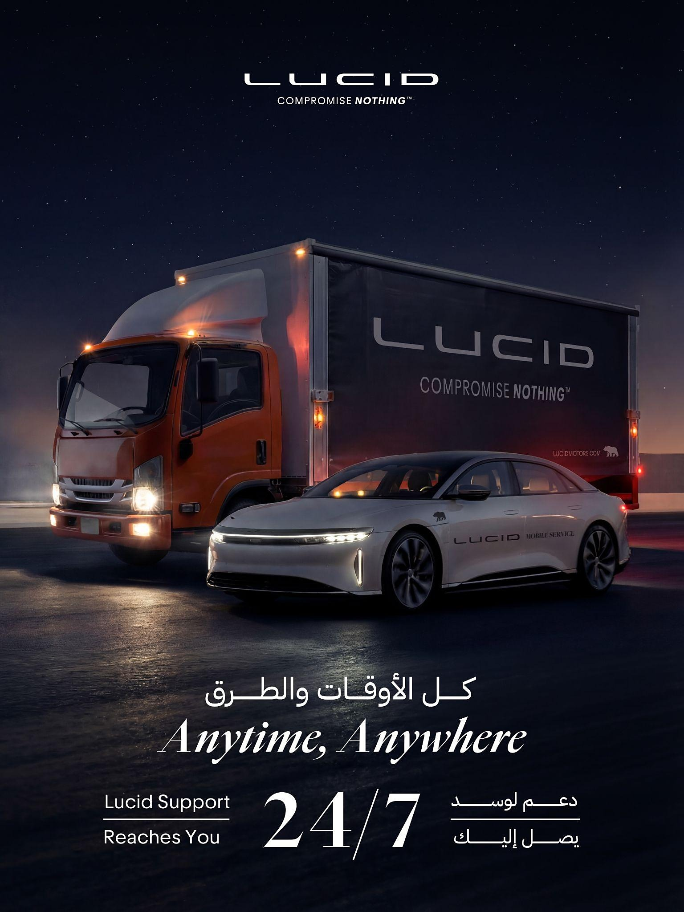
One question a month
The content plan answers the owner's questions in the order they actually come up, moving from reassurance to loyalty.
- Month 1Reassurance"We're here, wherever you are."
- Month 2Presence"Our service moves with you."
- Month 3ClarityHow support actually works, made simple.
- Month 4ControlService in the customer's hands, through the app.
- Month 5ProofReal service, real situations.
- Month 6LoyaltyBeyond ownership: "This brand stays with me."
The app journey
Step by step through the Lucid app: from requesting support to tracking it, so the service feels intuitive before it is ever needed.
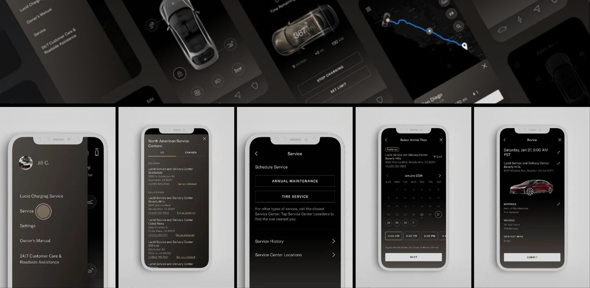
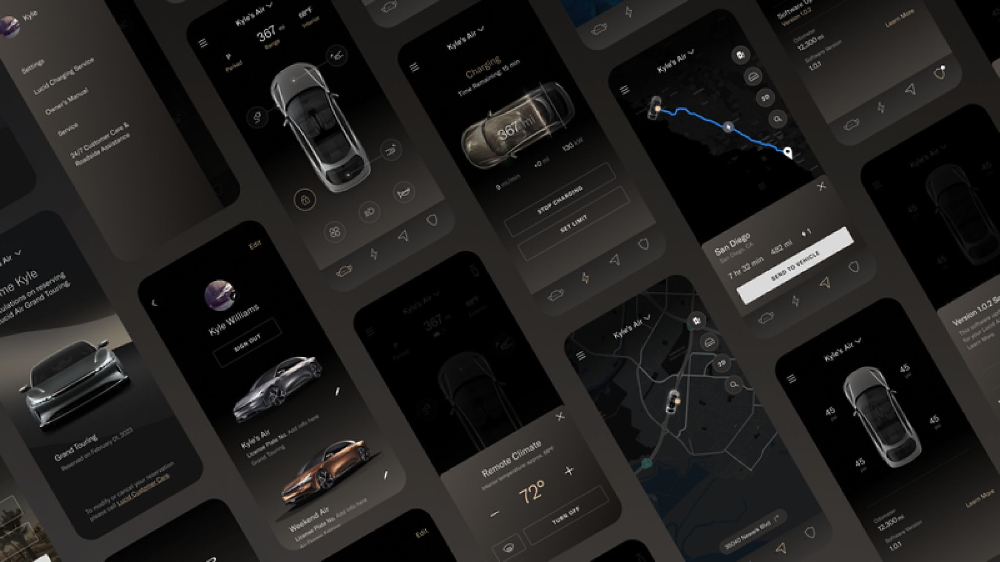
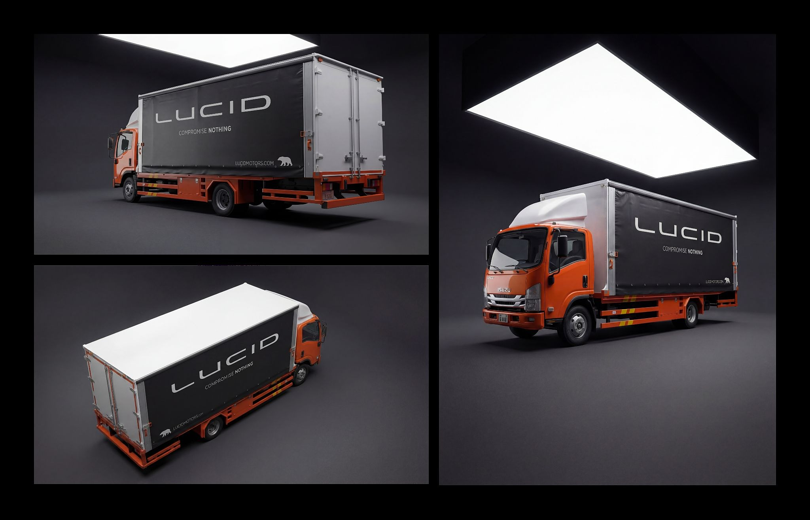
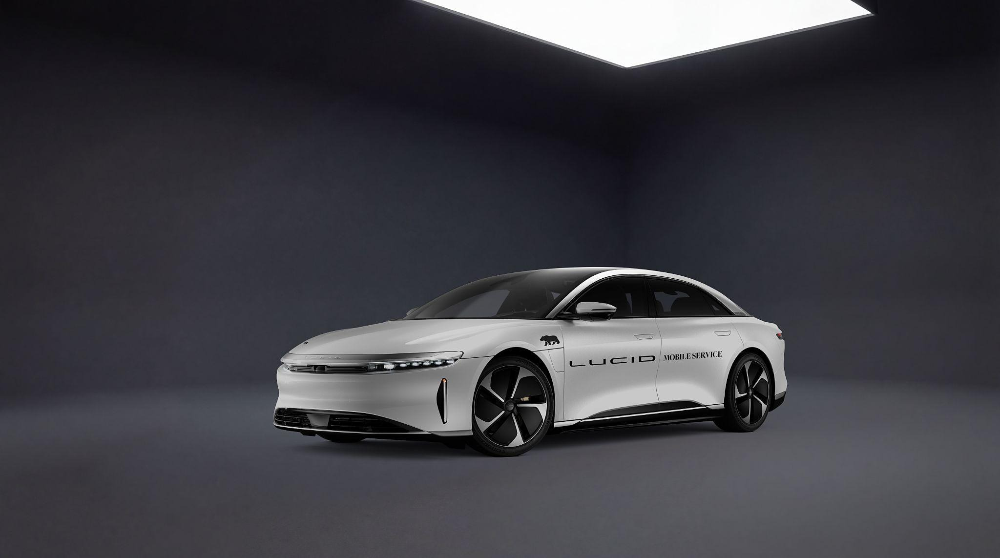
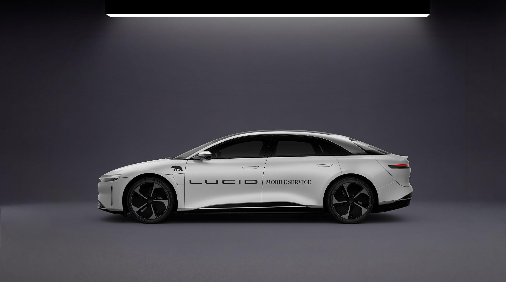
Wherever you drive,
support follows.
Time, place, experience and feeling all carry one promise: owning a Lucid means never facing it alone.
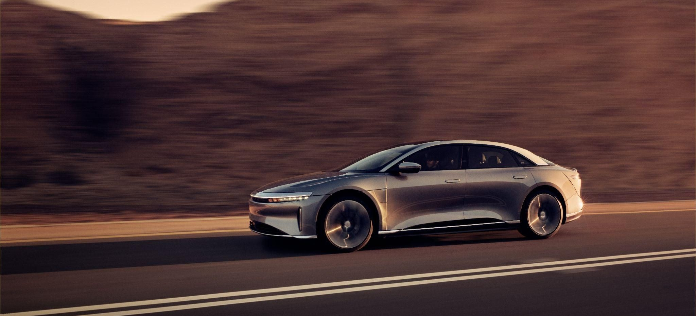